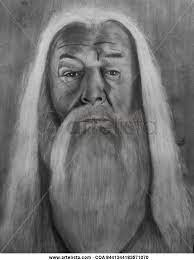
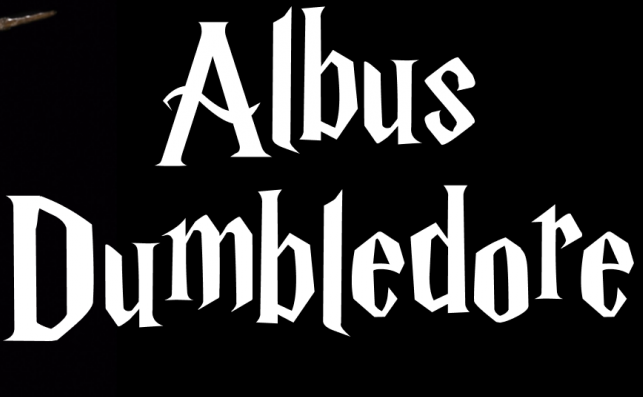
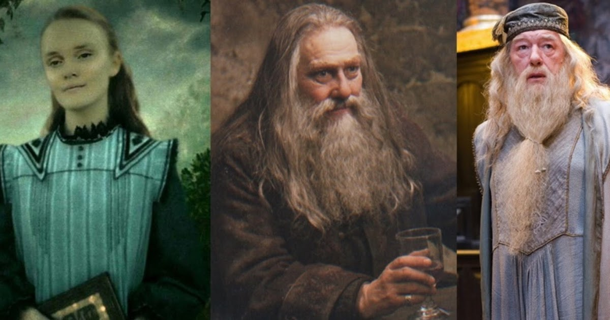

 
Harry James Potter es el protagonista de la serie de libros Harry Potter de J. K. Rowling. En su undécimo cumpleaños se entera de que es un mago y la trama de los libros se centra principalmente en los años en los que el huérfano Potter concurre al Colegio Hogwarts de Magia y Hechicería para practicar bajo la guía del director Albus Dumbledore y demás profesores. Allí, Harry también descubre que ya es famoso en todo el mundo mágico y que su destino está atado al de lord Voldemort, el mago tenebroso mundialmente temido y asesino de su madre y su padre.
En las ocho películas de Harry Potter estrenadas desde 2001-2011, Harry Potter ha sido interpretado por el actor británico Daniel Radcliffe. El productor David Heyman le pidió a Radcliffe que audicione para el papel de Harry en el 2000, al asistir a una obra titulada Stones in His Pockets en Londres. El papel ha sido altamente lucrativo para Radcliffe; para 2007, él tenía una riqueza estimada de £17 millones.
Caracterización
Apariencia
Albus Percival Wulfric Brian Dumbledore es un personaje de la saga de Harry Potter, creado por la escritora británica J. K. Rowling.
El personaje, presentado como el mago más poderoso de toda la saga y comparable a antagonistas tales como Grindelwald o lord Voldemort, es también el más moral de todos: su lema consiste en la afirmación de que «el amor es la magia más importante y poderosa del mundo».
Personalidad
Aunque parece un anciano paternal, sabio y protector, en realidad el personaje tiene un plan ideado a lo largo de veinte años para destruir al tenebroso lord Voldemort —ambos personajes tienen un breve enfrentamiento en el libro Harry Potter y la Orden del Fénix—. Es, durante gran parte de la historia, el director de Hogwarts y el creador de la Orden del Fénix.
Habilidades mágicas
Albus Dumbledore sabía hablar sirenio, reconocía el Pársel, y el Duendigonza, era especialista en Alquimia, Transformaciones, Legeremancia y Oclumancia, podía hacer hechizos sin varita, no verbales y volverse invisible sin necesidad de capa.